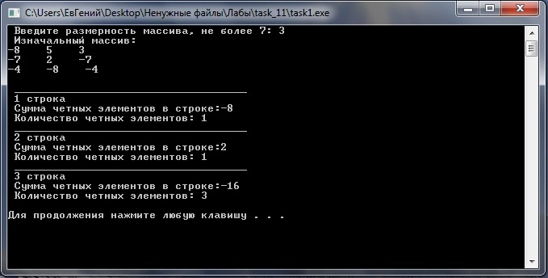
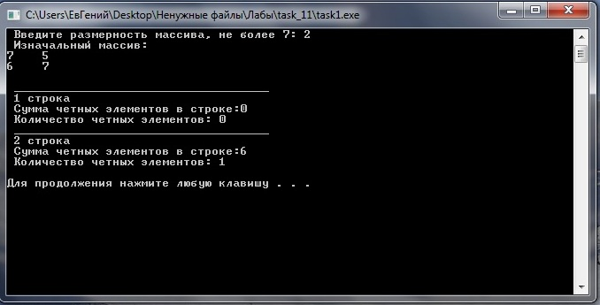

Лабораторное задание №11. Размешение двумерного массива в свободной памяти.
Условие задачи
С помощью
генератора случайных чисел сформировать квадратную матрицу вещественных чисел
размерности
m x m, где
значение
m <=7
вводится с клавиатуры. Диапазон формируемых в матрице значений от
–8 до +10.
Написать программу, в которой предусмотреть подсчет в каждой строке количества
четных элементов и их сумму. В результате на экран вывести сформированную
матрицу, значения количества и суммы элементов с номерами соответствующих строк.
Подсчет в
строке значения количества четных элементов и их сумму, оформить в виде функции.
Математическая модель
Для решения поставленой задачи необходимо использовать ГСЧ и функцию ( koli4estwo_ilementow).
Сначала вводится число m размерностью не больше 7, далее
производится проверка вода на корректность если ввод произведен не
правильно то выводится сообщение об ошибке. Затем создаем массив в свободной и определяем ГСЧ ,
при помощи двух циклов формируется матрица с значениями от -8 до 10.
После чего сформированая матрица выводится на экран и
создаем цикл при помощи которого ф-ия будет выполнятся по строчно в теле цикла подключается ф-ия ( koli4estwo_ilementow), которая будет вычислять количество четных элементов и их сумму.
В этой ф-ии при помощи двух циклов выбираем некоторый элемент (mass[i][j])
который проверяется на четность. Если элемент четный то в новый массив
в первый столбец записываем номер строки, во второй столбец записываем
сумму четных элементов, а в третий столбец записываем количество четных
элементов. Если же элемент не четный то поисходит проверка на то что а
существуют ли в этой строке четные элементы, если нет то в первый
столбец записываем номер строки, а в остальные столбцы записываем нули
В этой ф-ии определяем 2 переменные в которые будем
записывать сумму и количество четных элиментов. Создаем цикл в теле
которого будем проверять элимент на четность. Если элимент четный то к
переменной kl добовляем еденицу т.к. эта переменая хранит количество
четных элиментов, и к переменной sum добовляем четный элимент. после
того как цикл выполнился в этих двух переменных хранятся необходимые
нам значения. На экран мы выводим номер строки, в которой
производились вычисления, и переменные хранящие сумму и количество
четных элиментов в строке.
Далее после того как выполнился цикл, в главной ф-ии
в котором происходило вычисления, то происходид удаление массива из
свободной памяти.
Описание алгоритма
Для решения поставленой задачи подключить библиотеку <time.h> необходимую
для генирации случайного числа. Вглавной ф-ии выводим сообщение о том
что необходимо ввести размерность массива, происходит проверка этого
числа на коректность ввода. Если число удовлетворяет интервале от 0 до
7 то программа выполняется далее, если нет то на экран выводится
соодщение об ошибке. Далее определяем массив mass размерностью m на m в свободной памяти. Создаем вспомогательный массив указателей (mass = new int*[m]) после чего создается цикл (for (int i = 0; i<m; i++))
в теле которого формируем строки матрицы как одномерные массивы.
Определяем ГСЧ и создаем цик в теле которого
генерируем случайное число в отрезке от –8 до +10
и записываем его в массив под определенными номерами. Затем выводим
сформулированый массив на экран при помощи 2 циклов for. Затем создаем
еще один цикл for (for (int i=0; i<m; i++))
,который необходим для того чтобы на вход ф-ии подовался не весь
массив, а только некотороя строка под определенным номером. Это сделано
для удобства обработки массива. В теле цикла определяем
переменную К и сохроним в нее номер строки которая "сейчас" выполняется
(int k=i;). еще определим ф-ию по вычислению количества и сумммы четных элиментов (koli4estwo_ilementow (k, m, mass [i]))
на вход этой ф-ии будем подовать номер строки котороя в данный момент
вычисляется, количество столбцов в массиве и i-ою строку из массива.
В ф-ии koli4estwo_ilementow создадим две переменые (int sum=0, kl=0),
предворительно занулив их это сделано на тот случай если в строке не
окажется четных элементов тогда на экран выведутся нули. В переменную sum будем записывать сумму четных элиментов, а в переменную kl
будем записывать количество четных элиментов. Далее определим
цикл for () который будет вычислять номер столбца в i строке. В теле
которого будет выполнятся условная конструкция if (if (mass[i]%2==0)) необходимую для проверки элемента на четность. Если элемент четный то к переменной kl(kl++) добавится еденица, а к переменной sum (sum+=mass[i])
непосредственно четный элимент. После того как цик выполнится то на
экран выволится номер строки, сумма четных элиметнов, количество четных
элиментов в этой строке.
После того как в главной ф-ии выполнится цикл а соответственно и функция koli4estwo_ilementow происходит
удаление массива из свободной памяти, это происходит в обратном порядке
как происходило создание. т.е. сначала определяется цик for (for (int i=0; i<m; i++)) в котором удаляем строки массива (delete[] mass[i]), а затем и вспомогательный массив укозателей (delete [] mass).
Текст программы с комментариями
# include <iostream>
# include <stdio.h>
# include <time.h>
using namespace std;
void koli4estwo_ilementow (int k, int m, int mass []) // ф-ия по подсчету в каждой строке количества четных элиментов и их суммы
{
int sum=0, kl=0;
for (int i=0; i<m; i++)
{
if (mass[i]%2==0) // проверка элимента массива на четность
{
kl++; // подсчет количества четных элиментов
sum+=mass[i]; вычисление суммы
}
}
// вывод номера строки, суммы четных элиментов, количество четных элиментов
cout << " ____________________________________" << endl;
cout << " "<< k+1 << " строка" << endl;
cout << " Сумма четных элементов в строке:" << sum << endl;
cout << " Количество четных элементов: " << kl << endl;
}
int main()
{
int m=0;
cout << " Введите размерность массива, не более 7: "; // ввод размерности массива
cin >> m;
if (m<0 || m>7) // провека на корректность ввода
{
cout << " Размерность введена не правильно !!!!" << endl;
return 1;
}
// создание массива в свободной памяти
int ** mass;
mass = new int*[m];
for (int i = 0; i<m; i++)
{
mass[i] = new int[m];
}
srand (( unsigned ) time(NULL)); // определение ГСЧ
for (int i=0; i<m; i++)
{
for (int j=0; j<m; j++)
{
mass[i][j]=rand()%19-8; // запись произвольного числа
}
}
cout << " Изначальный массив:" << endl; // вывод сформулированого при помощи ГСЧ массива
for (int i=0; i<m; i++)
{
for (int j=0; j<m; j++)
{
cout << mass[i][j] << " ";
}
cout << endl;
}
cout << endl;
for (int i=0; i<m; i++) // выполнение ф-ии построчно
{
int k=i;
koli4estwo_ilementow (k, m, mass [i]); // включение ф-иb по подсчету в каждой строке количества четных элиментов и их суммы
}
cout << endl;
// удаление массива из свободной памяти
for (int i=0; i<m; i++)
{
delete[] mass[i];
}
delete [] mass;
system ("pause");
return 0;
}
Откомпилированный файл может быть получен по ссылке
Тесты и анализ результатов
Тест 1
При вводе размерности массива равному 3.
Результат работы программы представлен на рисунке ниже

Тест 2
При вводе размерности массива равному 6.
Результат работы программы представлен на рисунке ниже

Тест 3
При вводе размерности массива равному 2.
Результат работы программы представлен на рисунке ниже
